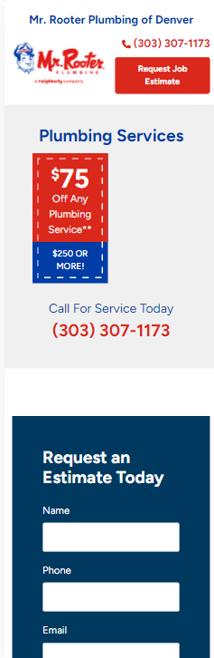
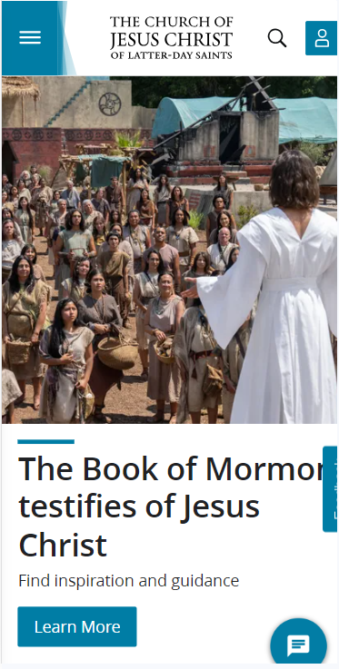

White Space Clean Design
The Home Depot
Website: https://www.homedepot.com/
Description: WHite space also called negative space is used intentionally to add highlight to certain elements. It is the space between the elements on your website page. White space organizes the website content by separating the elements as well as grouping them.
Visual Hierarchy
Mr. Rooter
Website: https://www.mrrooter.com/
Description:This website is a good example of visual hierarchy. Visual Heirarchy guides the reader's eyes across the page starting from the left and read horizontally to the right. This is where this website has the most important information. They are using the "Z" pattern to guide the viewer from top left to right and diagonally downward where they are able to enter their zip code. The colors are bright, and the most important elements are placed in order of importance.
PARC
The Church of Jesus Christ of Latter Day Saints
Website: https://www.churchofjesuschrist.org/
Description: PARC stands for proximity, alignment , repetition and contrast.When we see this website we can see how they have used PARC. As we can see that the elements in the page are in close proximity. As for alignment every element in the page is has a visual conecction to another element. Repetition is done by indtoducing the color blue throught the website this will insure consistency. Contrast is used to create visual interest which is done well by the use of black and white font colors depending on the background color.